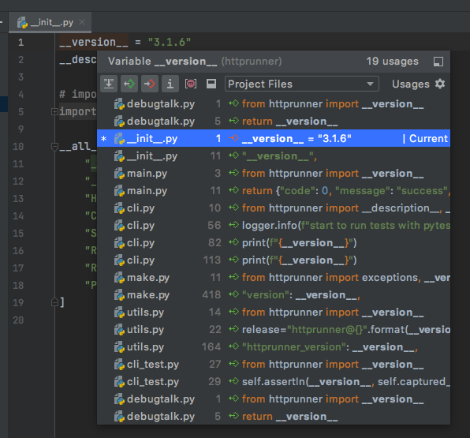
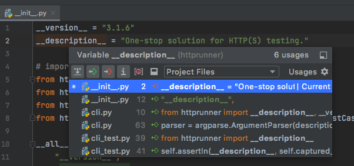
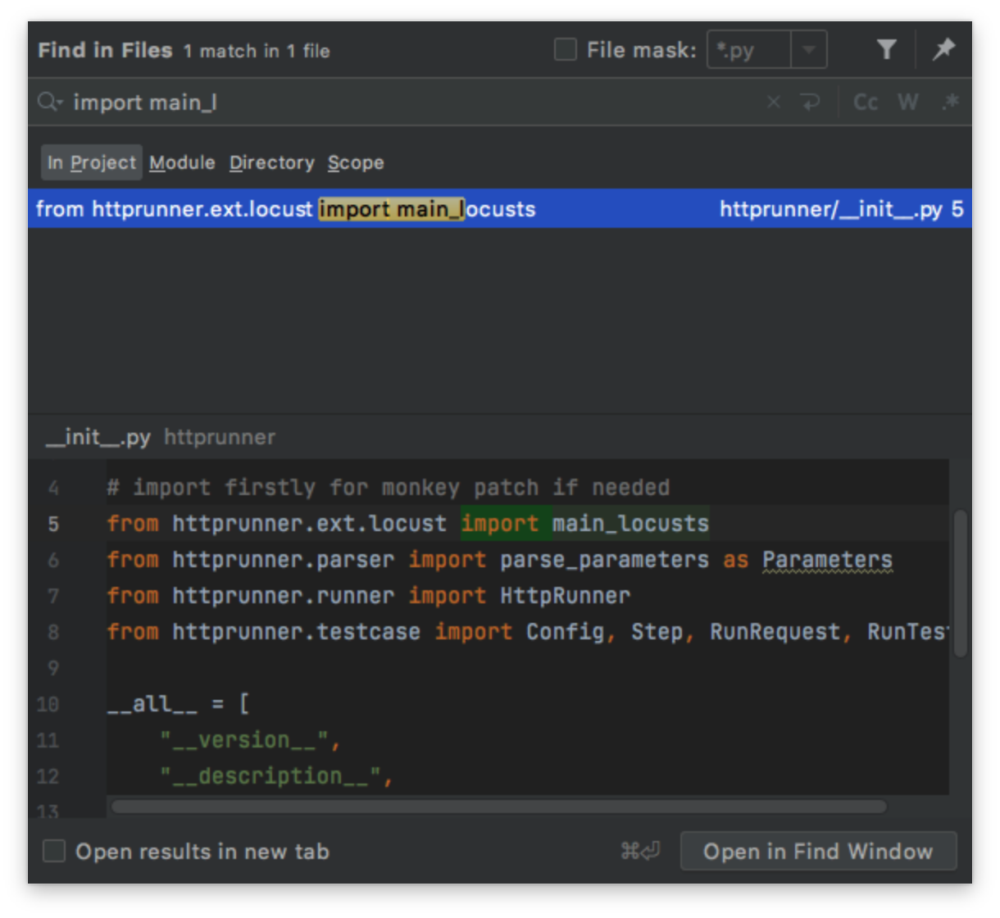
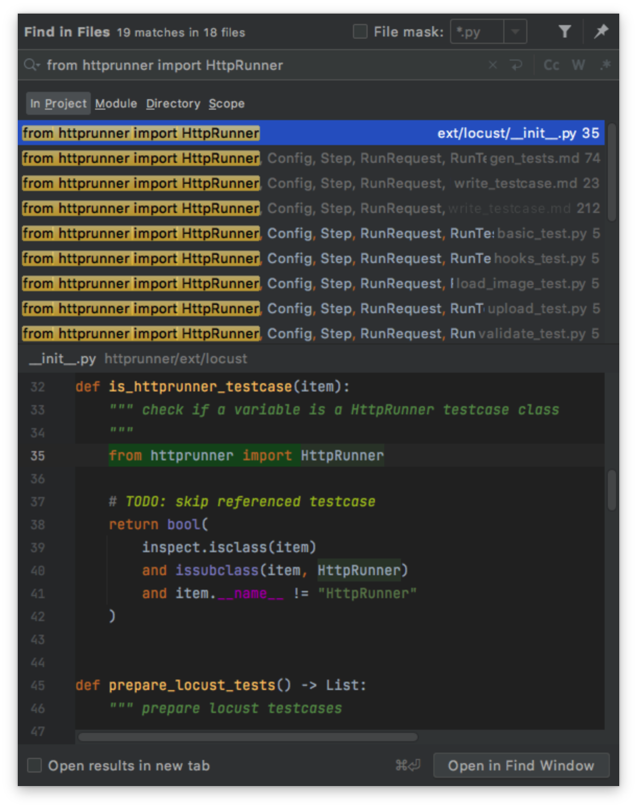

HttpRunner3源码剖析__init__文件干了些啥¶

大家好，我是刚哥。
从这篇文章开始，将对HttpRunner3的源码进行剖析。
为什么是HttpRunner3？其实pytest是一个更强大的测试框架，无奈它的源码实在是太复杂了，连学习pytest的使用都要花上很多时间，哪还有那么多精力去看它的源码。而其他很多所谓的测试框架实在是太粗糙了，学不到东西不说，还可能学错。HttpRunner正好介于两者之间，既不复杂，也不简单，刚刚好。
对源码进行怎样的剖析？HttpRunner的源码包括这几个目录：docs（文档）、examples（示例）、httprunner（源文件）、tests（测试文件），我只会选择httprunner（源文件）来进行剖析，它的源码全在这个目录下。看源码是特别费脑的，但是就算费脑也可能还是看的云里雾里，这时候方法就显得格外重要了。我觉得需要带着问题去看，比如``__init__``文件干了些啥？项目初始化结构是怎么来的？请求是怎么发出去的？用例是怎么运行的？报告是怎么生成的？等等等。
本文先从httprunner/__init__.py这个初始化文件开始，由浅入深，由易入难。它的内容很简单：
__version__ = "3.1.6"
__description__ = "One-stop solution for HTTP(S) testing."
## import firstly for monkey patch if needed
from httprunner.ext.locust import main_locusts
from httprunner.parser import parse_parameters as Parameters
from httprunner.runner import HttpRunner
from httprunner.testcase import Config, Step, RunRequest, RunTestCase
__all__ = [
"__version__",
"__description__",
"HttpRunner",
"Config",
"Step",
"RunRequest",
"RunTestCase",
"Parameters",
]
__version__是版本号，会在很多地方用到：

__description__是描述，也会在很多地方用到：

这一行代码：
## import firstly for monkey patch if needed
from httprunner.ext.locust import main_locusts
main_locusts是在httprunner/ext/locust/__init__.py文件中定义的。注释是说，先把这个模块导入进来，如果需要的话，可以在这里添加猴子补丁。有点费解，只有这一处代码：

先看下__all__的作用，再来猜测。
__all__是为了方便其他地方直接通过from httprunner import来导入包，比如里面的HttpRunner是from httprunner.runner import HttpRunner这样导入的，加入到__all__以后，就能直接from httprunner import HttpRunner来导入了：

省去了from httprunner.runner这种代码。
那么那个猴子补丁，我对它用法的猜测是这样的：
## import firstly for monkey patch if needed
from httprunner.ext.locust import main_locusts
def main_locusts_monkey_patch():
# ...
main_locusts = main_locusts_monkey_patch
__all__ = [
"main_locusts"
]
有任何不同想法，欢迎加群讨论哟。